This Issue
August 2026 edition
421 vs 710
Flips resold on recorded deeds this edition versus the same two months a year ago
Flip exits fell to 421 from 710 a year ago, and the deals that closed sat a median 246 days
Recorded flip resales came in at 421 against 710 a year ago and 510 in the prior period. The exits that cleared took longer — a median 246 days held versus 209 a year ago — and carried a wider gross spread, $86,000 versus $76,000 before rehab and carry, which are not public record. Flippers also slowed the buy side, taking 659 homes versus 904. Fewer operators are carrying the volume: 282 sold at least one flip this edition versus 474 a year ago.
Investor Playbook
What this issue's numbers suggest checking, by investor type. Observations from recorded data — not investment, legal, or tax advice.
Fewer end buyers per contract — pre-verify the exit
Wholesalers
Flippers bought 659 homes this edition versus 904 a year ago, and only 4 assignments surfaced on recorded deeds against 18 (a floor, since most assignments never touch a deed). The data suggests building a shorter, harder buyer list rather than a broad blast: the zips with the widest recorded buy-to-sale gaps were 48228 ($61,272 buy vs $115,000 sale), 48227 ($70,000 vs $129,000) and 48238 ($59,900 vs $116,500). Worth pricing contracts so a buyer can absorb a 246-day median hold.
Underwrite eight months of carry, not four
Flippers
Median hold on resales this edition was 246 days versus 209 a year ago, with 31% of exits taking over a year and only 14% turning inside 90 days. Median gross margin was $86,000 (rehab and carry are not in the record) on a $205,000 median sale at $161.55/sqft, versus $156.34 a year ago. The typical unit remains 1,206 sqft, 3 bed, built around 1950, with 47% pre-1950 — worth budgeting older-stock mechanical scope into that longer carry.
Buy-side competition from flippers has thinned in the low-basis Detroit zips
Landlords
48205 (Denby) recorded 75 purchases at a $49,000 median buy against only 9 flips, and 48224 (Morningside) 93 purchases at $77,210 against 14 flips — the least flip-crowded of the busiest zips. Detroit's 953 recorded purchases came in at a $65,000 median ($55/sqft) versus $130,500 in Warren and $142,450 in Roseville. With flipper acquisitions down to 659 from 904, the data suggests less bidding pressure on rehab-grade single family than a year ago.
Extension risk is the product gap right now
Private lenders
Recorded private loans fell to 32 from 92 a year ago while institutional rehab lenders stayed active — Kiavi at 142 trailing-12-month loans (median $159,750, loan-to-price 1.53, 93% rehab-funded) and RFLF 4 at 44 (median $133,625, 95% rehab-funded). Median loan-to-price across all 1,612 financed purchases was 1.05. With median holds at 246 days and 31% of exits past a year, worth sizing terms and extension provisions to that distribution rather than to a two-quarter assumption.
Small multi is nearly absent from the flip pipeline
Multifamily investors
Two-to-four unit properties were 2.9% of flips resold this edition, down from 4.2% a year ago, while 114 two-to-four unit purchases recorded at a $97,000 median ($53/sqft). Apartment 5+ showed 21 purchases at a $170,000 median ($168/sqft) and unspecified multi-family 22 at $475,000. The data suggests the 2-4 unit lane is being bought to hold rather than to resell — worth checking whether seller expectations in that segment still reference single-family per-foot pricing of $119.
Factoids
Numbers from this period a practitioner would repeat to a colleague. Each computed directly from recorded instruments.
$144,900 — Median investor purchase price, 2,731 recorded buys
trending up · was $115,000 a year ago on 2,515 buys
Acquisition pricing rose while resale volume fell, so the buy-side basis is being reset upward even as exits thin. Purchase count is also up from 2,519 in the prior period.
22.8% — Share of flip resale dollars taken by the ten largest operators
trending down · vs 50.4% a year ago
The exit market is far less concentrated than it was: revenue is spread across 282 selling operators instead of 474 with a heavy top end. Smaller operators face less pricing pressure from a handful of large sellers.
50.8% Wayne — Wayne County share of flips resold this edition
trending down · vs 58.6% a year ago; Oakland 23.8% vs 19.3%
Exit activity shifted outward, with Oakland and Macomb (21.6% vs 19.2%) both picking up share. Median flip distance from the CBD moved to 20.1 km from 19.5 km.
26 flips in 48235 — Grandmont resales, on 71 investor purchases in the zip
trending up · 6.2% of all flips vs 4.1% a year ago
Median buy in 48235 was $100,000 against a $160,000 median sale — the widest recorded gap among the busiest zips. Warren 48089 moved the other way, to 1.2% of flips from 3.5%.
32 private loans — Recorded private/individual loans, median $121,900
trending down · vs 92 a year ago at a $112,500 median
Recorded private lending is a third of last year's count while the typical loan size is larger. Across the trailing 12 months, 49.4% of 3,261 observed purchases carried recorded financing and 55.4% of the 1,612 financed deals included rehab dollars.
$53/sqft on 2-4 units — Median investor price per square foot, 114 two-to-four unit purchases at a $97,000 median
holding steady · vs $119/sqft on 1,862 single-family purchases
Small multifamily continues to trade at less than half the per-foot basis of single family in the same market. Condos sat at $171/sqft on 366 deals.
Market Activity — Investor Purchases
Monthly count of investor purchases of MSA properties (left axis) and the median purchase price (right axis), trailing 13 months. The most recent month can grow up to ~15% as late recordings arrive.
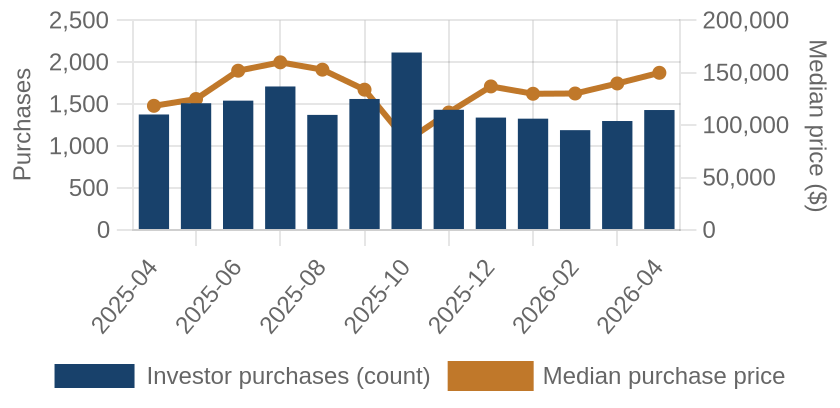
Investor purchases per month (bars) and median purchase price (line), trailing 13 months.
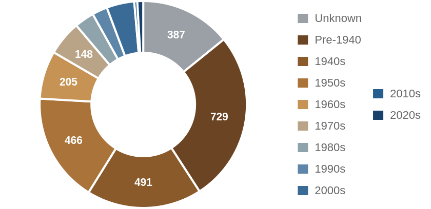
Which vintage of housing investors bought this edition, by decade built.
Where the Money Went
The geography of the period's investor activity: which zip codes saw the most recorded deals, and the largest individual transactions at street level.
The 8 busiest zip codes for investor deals
Pins rank the busiest zips by recorded investor deals (purchases + flips of existing homes) this period — #1 busiest; orange = top 3; pin size scales with deal volume. Median buy is the typical investor purchase; median sale the typical flip resale. Click a pin for details; full table below.
| # | Zip | Area | Purchases | Flips | Median buy | Median sale |
|---|
| #1 | 48224 | Morningside | 93 | 14 | $77,210 | $115,500 |
| #2 | 48235 | Grandmont | 71 | 26 | $100,000 | $160,000 |
| #3 | 48205 | Denby | 75 | 9 | $49,000 | $62,000 |
| #4 | 48228 | Warrendale | 77 | 7 | $61,272 | $115,000 |
| #5 | 48227 | Greenfield | 68 | 7 | $70,000 | $129,000 |
| #6 | 48089 | Warren | 64 | 5 | $114,500 | $188,500 |
| #7 | 48238 | Russell Woods | 47 | 10 | $59,900 | $116,500 |
| #8 | 48066 | Roseville | 48 | 8 | $142,450 | $144,000 |
A representative deal in each of the busiest zips
One deal per zip: the largest matching this market's typical house (typical for this market: 1165 sqft, 3 bed, built around 1951; priced within 4x the county assessment and under 5x its own zip's median).
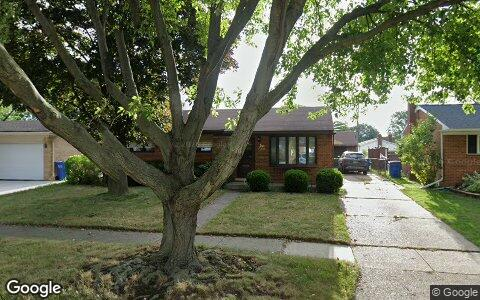
$275,000 · Purchase
26608 MARILYN AVE, Warren MI 48089
Single family · 1,255 sqft · Mar 26
Street View Aug 2022 — before the purchase
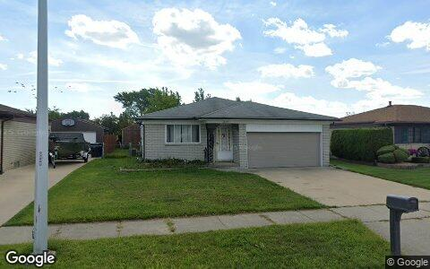
$259,999 · Purchase
16210 WELLINGTON AVE, Roseville MI 48066
Single family · 1,288 sqft · Mar 13
Street View Sep 2025 — before the purchase
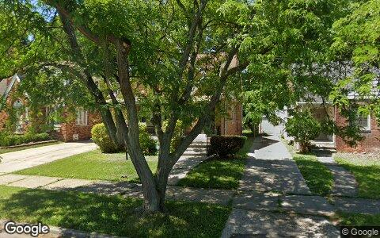
$245,000 · Purchase
5291 DEVONSHIRE RD, Detroit MI 48224
2-4 units · 1,621 sqft · Apr 27
Street View Jun 2022 — before the purchase
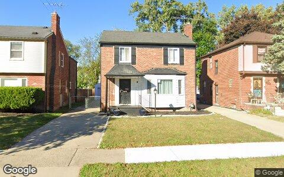
$166,400 · Purchase
19483 HARTWELL ST, Detroit MI 48235
Single family · 1,498 sqft · Mar 24
Street View Oct 2025 — before the purchase
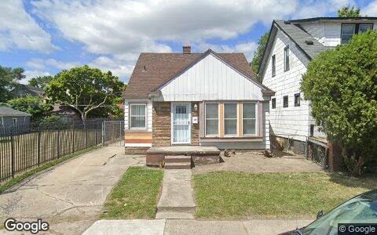
$79,000 · Purchase
13573 CHERRYLAWN ST, Detroit MI 48238
Single family · 1,114 sqft · Mar 26
Street View Aug 2022 — before the purchase
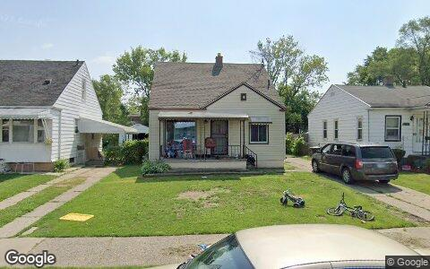
$70,000 · Purchase
6506 STAHELIN AVE, Detroit MI 48228
Single family · 960 sqft · Apr 20
Street View Jun 2025 — before the purchase
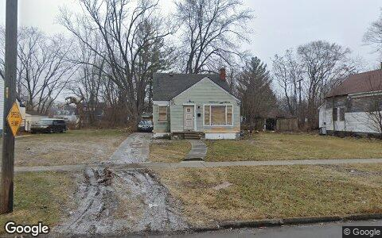
$60,000 · Purchase
15017 LAPPIN ST, Detroit MI 48205
Single family · 1,008 sqft · Apr 16
Street View Jan 2022 — before the purchase
Deal sheet — private lending, in date order
Private loans recorded against residential property this period, oldest first.
| Date | Lender | Amount | Property | Use |
|---|
| Mar 4 | Drake Christopher | $230,000 | 23701 Coyle ST, Oak Park MI 48237 | Single family |
| Mar 9 | Charter Township/waterford | $18,770 | 2291 Newberry RD, Waterford MI 48329 | Single family |
| Mar 13 | Ehomes Realty | $220,000 | 22130 Kenosha ST, Oak Park MI 48237 | Single family |
| Mar 17 | Selvi Saravanan Ira | $46,000 | 334 E Milton Ave, Hazel Park MI 48030 | Single family |
| Mar 17 | Selvi Saravanan Ira | $46,000 | 334 E Milton Ave, Hazel Park MI 48030 | Single family |
| Mar 18 | Whitson Dave | $20,000 | 3050 Pratt LN, Attica MI 48412 | Single family |
| Apr 14 | Aljanabi Yasir | $232,033 | 2655 Willow ST, Dearborn MI 48124 | Single family |
| Apr 14 | Aljanabi Yasir | $232,033 | 2655 Willow ST, Dearborn MI 48124 | Single family |
Largest flip margin deals of the period, at street level
Gross margin = recorded sale price minus the flipper's recorded purchase price. Purchase deeds are recoverable for roughly 4 in 10 flips; rehab and carry costs are not public record.
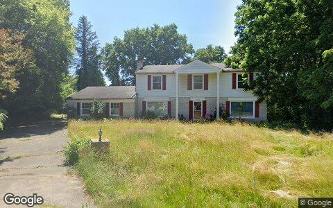
$455,000 gross · bought $165,000 (Oct 2024) → sold $620,000
3472 WINCHESTER RD, West Bloomfield MI 48322
Single family · 2,631 sqft · Mar 11
Street View Jul 2024 — before the flip (pre-renovation)
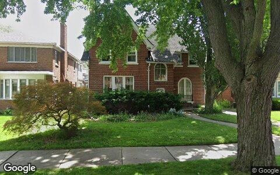
$360,162 gross · bought $138,838 (Dec 2024) → sold $499,000
17214 WILDEMERE ST, Detroit MI 48221
Single family · 2,466 sqft · Mar 20
Street View Jun 2022 — before the flip (pre-renovation)
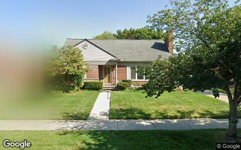
$315,000 gross · bought $260,000 (Mar 2025) → sold $575,000
19934 E WILLIAM CT, Grosse Pointe Woods MI 48236
Single family · 1,898 sqft · Apr 6
Street View Aug 2018 — before the flip (pre-renovation)
$244,000 gross · bought $156,000 (Sep 2025) → sold $400,000
3750 ALIDA AVE, Rochester Hills MI 48309
Single family · 1,680 sqft · Apr 8
Street View Aug 2018 — before the flip (pre-renovation)
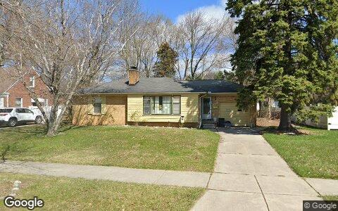
$219,750 gross · bought $140,250 (Sep 2025) → sold $360,000
14070 WINCHESTER ST, Oak Park MI 48237
Single family · 1,086 sqft · Apr 2
Street View Apr 2025 — before the flip (pre-renovation)
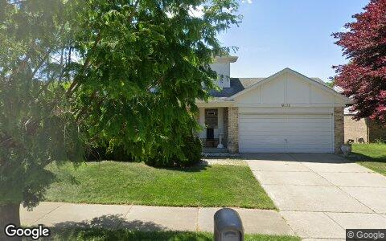
$212,500 gross · bought $230,000 (Apr 2025) → sold $442,500
8821 KNOLSON AVE, Livonia MI 48150
Single family · 1,969 sqft · Apr 1
Street View May 2024 — before the flip (pre-renovation)
Flip Structure — Year over Year
How the flip market itself is changing: margins, who is doing the flipping, what they flip, and where. Same two calendar months, this year vs last, from the current data extract.
| Flip market structure | Same months last year | This edition |
|---|
| Flips sold | 710 | 421 |
| Median sale | $190,000 | $205,000 |
| Median $/sqft | $156 | $162 |
| Sale vs county-assessed | 1.25× | 1.27× |
| Median gross margin (matched buys) | $76,000 | $86,000 |
| Median margin % | 75% | 74% |
| Median hold | 6.9 mo | 8.1 mo |
| Homes bought by flippers | 904 | 659 |
| Net to inventory (bought − sold) | +194 | +238 |
| Active flippers | 474 | 282 |
| Top-10 flippers' revenue share | 50% | 23% |
| Median house: sqft / beds / built | 1185 / 3 / 1950 | 1206 / 3 / 1950 |
| Pre-1950 stock share | 50% | 47% |
| 2–4 unit share | 4% | 3% |
| Median distance from downtown | 19.5 km | 20.1 km |
Homes bought counts every deed recorded to a known flipper in the window, resold or not. Net to inventory is that minus flips sold. The standing stock is in the Flip Pipeline section.
Attributed profit per flip (per-investor aggregates, by drop period): Feb 26→Jun 26: 308 flips, $14,496/flip · Jun 26→Aug 26: 167 flips, $116,458/flip.
County mix (share of flips, last year → this edition): Wayne 59%→51% · Oakland 19%→24% · Macomb 19%→22% · St. Clair 1%→2% · Lapeer 1%→1% · Livingston 1%→0%.
Biggest zip share moves: Warren 3.5%→1.2% · Grandmont 4.1%→6.2% · Warrendale 3.7%→1.7% · Dexter-Linwood 2.0%→0.0% · Greenfield 3.4%→1.7% · Clinton Township 0.7%→2.4%.
Flip Pipeline — Buying, Selling and Inventory
Homes bought by known flippers and homes they resold, per month, alongside the stock sitting in flipper hands. A house enters inventory when a flipper buys it and leaves on the next recorded sale, at any price. Purchases still unsold after five years are treated as holds and drop out.
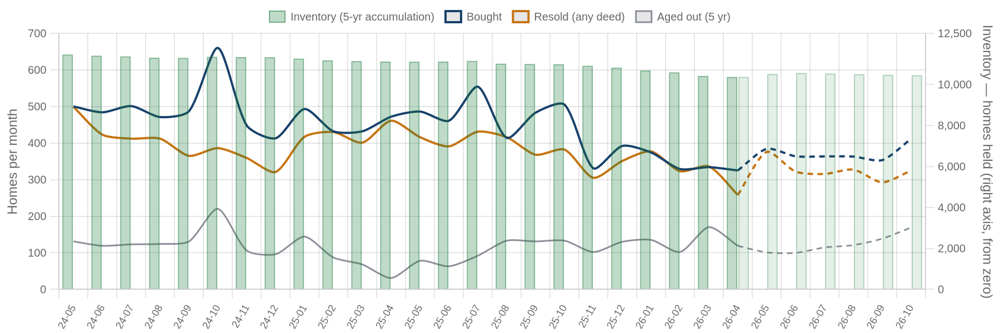
Solid = recorded, dashed = projected. Green bars are inventory on the right axis: homes bought and not yet resold. Aged out is purchases passing five years unsold. Inventory moves by bought minus resold minus aged out.
| Flip pipeline | Bought / mo | Resold / mo | Aged out / mo | Inventory |
|---|
| Latest recorded month (2026-04) | 325 | 258 | 119 | 10,366 |
| Projected (2026-10) | 412 | 325 | 169 | 10,452 |
Method: a straight-line trend through the last 24 months, adjusted for the month of the year, shown dashed as a projection. The series stops before the newest month or two, where deeds are still recording.
Who's Funding the Deals
First mortgages open on flipper purchases from May 2025 – Apr 2026 that have not yet resold. 49% carried recorded debt; the rest closed cash or off-record. Ranked by deal count.
49%
Purchases financed
1,612 of 3,261 flipper purchases carried a recorded first mortgage
$130,000
Typical loan
median 1.05× the purchase price — the median lender advances rehab money on top of the buy
55%
Funding the rehab too
893 of 1,612 loans exceed the purchase price, so the lender is covering work as well as the buy
| Lender | Loans | Borrowers | Median loan | Loan vs price | Funds rehab | Median purchase |
|---|
| Kiavi Funding INC | 142 | 59 | $159,750 | 1.53× | 93% | $104,000 |
| United Wholesale Mortgage LLC | 77 | 62 | $168,000 | 0.95× | 27% | $175,000 |
| Rocket Mortgage LLC | 68 | 54 | $189,000 | 0.97× | 34% | $210,000 |
| RFLF 4 LLC | 44 | 15 | $133,625 | 1.30× | 95% | $103,500 |
| Quicken Loans INC | 37 | 25 | $90,000 | 0.94× | 43% | $96,706 |
| Next Bridge Funding LLC | 25 | 7 | $141,550 | 1.04× | 56% | $139,000 |
| Jpmorgan Chase Bank NA | 23 | 22 | $99,200 | 0.96× | 39% | $100,000 |
| Mino Lending Solutions LLC | 20 | 5 | $112,200 | 1.95× | 100% | $56,750 |
| CV3 Financial Services LLC | 19 | 9 | $100,500 | 1.90× | 100% | $55,000 |
| Mortgage 1 Incorporated | 19 | 19 | $198,989 | 1.01× | 53% | $155,000 |
Rates and terms are not published: the county feed models both. Borrowers counts the distinct flippers on each lender's book. Loan vs price is the recorded first mortgage divided by what the buyer paid. Above 1.00x the lender is funding purchase plus rehab; below it the buyer brought cash to the table. Blanket mortgages covering several parcels are excluded, as are loans outside 0.1x-3x the price. Rates and points are not public record.
Flipper Profile — The Working Flipper
The 70th–90th percentile of local flippers by lifetime flip count — the established operators below the whales: 4–8 lifetime flips each. Bath counts are not in the assessor extract.
444
Flippers in the band
each with 4–8 lifetime flips (avg 5.2)
$69,000
Median gross margin
2,580 flips matched to their purchase price
5.5 mo
Typical hold
purchase to resale, matched deals
1165 sqft · 3 bd
Typical house
median year built 1951
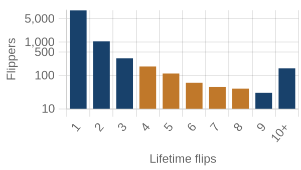
flippers by lifetime flips · orange = this band
Where they work: Morningside (48224) 4% · Lincoln Park (48146) 3% · Warren (48089) 3% · Bagley (48221) 2% · Taylor (48180) 2%.
Market Pulse
| per month, Feb–Jun 2026 | per month, Jun–Aug 2026 | change | avg/mo 2yr | avg/mo 4yr |
|---|
| ▼ Homes bought by flippers | 452 | 330 | -27% | 449 | — |
| ▼ Flips sold (deeds) | 355 | 211 | -41% | 385 | — |
| ▲ Lending deals funded | 51 | 130 | +156% | — | — |
| ▲ Seller/notes held (net) | 16 | 289 | +273/mo | — | — |
| ▼ Investors (net) | 918 | 599 | -35% | — | — |
Flips and flipper purchases = recorded deeds, same two months each year; their 2- and 4-year columns are per-month averages of the deed series. The remaining rows come from the investor file, which spans 13 months, so they have no multi-year average (2026: Jun 2026 → Aug 2026; 2025: Feb 2026 → Jun 2026).
Past Issues
Methodology
Source Data
County recorder & assessor via FARES
Every figure is computed from recorded instruments (deeds, mortgages, assignments) and assessor property records for the five counties of the Detroit-Elyria MSA. No surveys, no estimates, no listings data.
This edition analyzes transactions dated March 1 – April 30, 2026, as recorded through the 2026-08 data extract.
Who Counts as an Investor
Transaction-pattern identification
Investors are entities whose recorded transaction history looks like investing: rental holding (landlords), short-hold resales (flippers), private mortgage lending, note holding, or contract assignment (wholesalers). Banks, homebuilders, iBuyers, SFR funds, and government entities are identified by name and reported separately from small investors.
How Comparisons Work
Attribution deltas + same-window comparisons
The Market Pulse reports activity attributed between successive data drops, from the per-investor lifetime totals maintained upstream — periods differ in length, so per-month rates are shown. Elsewhere, "vs. year ago" compares the same calendar months one year earlier, counted from the same data extract. Transfers under $5,000 (quitclaims, partial interests) are excluded everywhere. Counts lag recording by 4–8 weeks, and the newest month can grow up to ~15% as late records arrive — direction is reliable before magnitude.
Known Limits
Floors, not ceilings
Wholesale assignments only appear when they touch a recorded deed, so those counts are a floor. Flip hold times are measured from the prior recorded sale. Names are the owner of record, which may be an LLC or trust.
About
Purpose
A working tool for small real estate investors in Greater Detroit: what actually closed, where, at what prices, and what it suggests checking next — one theme per issue.
Cadence
Published with each bi-monthly data drop, covering the two most recent complete months of recorded activity.
Disclaimer
Observations from public records, not investment, legal, or tax advice. Past activity does not guarantee future results. Verify any property or counterparty independently before transacting.